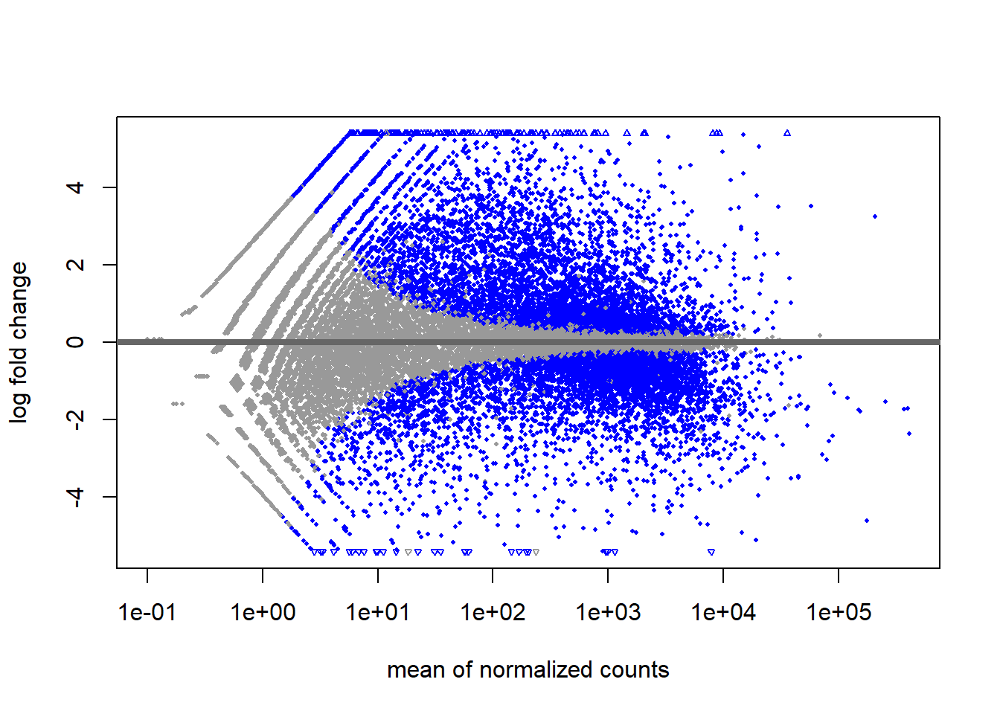

8 RNA-Seq (an example)
8.1 Introduction
This workflow below is based on Mary Piper.1 For analysis, we used the DESeq2 package2 and also considered Michael I. Love, Simon Anders, and Wolfgang Huber3 description.
The research questions and databases used in the workflow are based on the publication of Casimiro Gerarduzzi et al.4 RNA sequencing data can be downloaded from the Gene Expression Omnibus (GEO) database (GEO accession: [GSE85209] (https://www.ncbi.nlm.nih.gov/geo/query/acc.cgi?acc=GSE85209)).
8.2 Loading packages
# Load library for DESeq2
# if (!requireNamespace("BiocManager", quietly = TRUE))
# install.packages("BiocManager")
#
# .libPaths()
# BiocManager::install("DESeq2")
# devtools::install_github("stephenturner/annotables")
library(DESeq2)
# Load library for RColorBrewer
library(RColorBrewer)
# Load library for pheatmap
# install.packages("pheatmap")
library(pheatmap)
# Load library for tidyverse
library(tidyverse)8.3 Read counts
smoc2_rawcounts <- read.csv("data/fibrosis_smoc2_rawcounts_unordered.csv")
rownames(smoc2_rawcounts) <- smoc2_rawcounts$X
smoc2_rawcounts$X <- NULL
# Explore the first six observations of smoc2_rawcounts
head(smoc2_rawcounts)
#> smoc2_fibrosis1 smoc2_fibrosis4
#> ENSMUSG00000102693 0 0
#> ENSMUSG00000064842 0 0
#> ENSMUSG00000051951 72 30
#> ENSMUSG00000102851 0 0
#> ENSMUSG00000103377 0 0
#> ENSMUSG00000104017 0 0
#> smoc2_normal1 smoc2_normal3
#> ENSMUSG00000102693 0 0
#> ENSMUSG00000064842 0 0
#> ENSMUSG00000051951 0 3
#> ENSMUSG00000102851 0 0
#> ENSMUSG00000103377 1 0
#> ENSMUSG00000104017 0 0
#> smoc2_fibrosis3 smoc2_normal4
#> ENSMUSG00000102693 0 0
#> ENSMUSG00000064842 0 0
#> ENSMUSG00000051951 36 1
#> ENSMUSG00000102851 0 0
#> ENSMUSG00000103377 0 0
#> ENSMUSG00000104017 0 0
#> smoc2_fibrosis2
#> ENSMUSG00000102693 0
#> ENSMUSG00000064842 0
#> ENSMUSG00000051951 51
#> ENSMUSG00000102851 0
#> ENSMUSG00000103377 0
#> ENSMUSG00000104017 0
# Explore the structure of smoc2_rawcounts
str(smoc2_rawcounts)
#> 'data.frame': 47729 obs. of 7 variables:
#> $ smoc2_fibrosis1: int 0 0 72 0 0 0 0 0 0 1 ...
#> $ smoc2_fibrosis4: int 0 0 30 0 0 0 0 0 0 1 ...
#> $ smoc2_normal1 : int 0 0 0 0 1 0 0 0 0 1 ...
#> $ smoc2_normal3 : int 0 0 3 0 0 0 0 0 0 0 ...
#> $ smoc2_fibrosis3: int 0 0 36 0 0 0 0 0 0 1 ...
#> $ smoc2_normal4 : int 0 0 1 0 0 0 0 0 0 0 ...
#> $ smoc2_fibrosis2: int 0 0 51 0 0 0 0 0 0 1 ...8.4 Distribution of counts
library(ggplot2)
ggplot(smoc2_rawcounts) +
geom_histogram(aes(x=smoc2_fibrosis1), bins = 300)
summary(smoc2_rawcounts$smoc2_fibrosis1)
#> Min. 1st Qu. Median Mean 3rd Qu. Max.
#> 0.0 0.0 1.0 579.7 184.0 420026.08.5 Setting of metadata
# Create genotype vector
genotype <- c("smoc2_oe", "smoc2_oe", "smoc2_oe", "smoc2_oe", "smoc2_oe", "smoc2_oe", "smoc2_oe")
# Create condition vector
condition <- c("fibrosis", "fibrosis", "fibrosis", "fibrosis", "normal", "normal", "normal")
# Create data frame
smoc2_metadata <- data.frame(genotype, condition)
# Assign the row names of the data frame
rownames(smoc2_metadata) <- c("smoc2_fibrosis1", "smoc2_fibrosis2", "smoc2_fibrosis3", "smoc2_fibrosis4", "smoc2_normal1", "smoc2_normal3", "smoc2_normal4")
smoc2_metadata
#> genotype condition
#> smoc2_fibrosis1 smoc2_oe fibrosis
#> smoc2_fibrosis2 smoc2_oe fibrosis
#> smoc2_fibrosis3 smoc2_oe fibrosis
#> smoc2_fibrosis4 smoc2_oe fibrosis
#> smoc2_normal1 smoc2_oe normal
#> smoc2_normal3 smoc2_oe normal
#> smoc2_normal4 smoc2_oe normal8.6 Matching metadata and counts data
# Use the match() function to reorder the columns of the raw counts
reorder_idx <- match(rownames(smoc2_metadata), colnames(smoc2_rawcounts))
# Reorder the columns of the count data
reordered_smoc2_rawcounts <- smoc2_rawcounts[ , reorder_idx]
all(rownames(smoc2_metadata) == colnames(reordered_smoc2_rawcounts))
#> [1] TRUE
# Create a DESeq2 object
dds_smoc2 <- DESeqDataSetFromMatrix(countData = reordered_smoc2_rawcounts,
colData = smoc2_metadata,
design = ~ condition)8.7 Normalizing counts
# Determine the size factors to use for normalization
dds_smoc2 <- estimateSizeFactors(dds_smoc2)
sizeFactors(dds_smoc2)
#> smoc2_fibrosis1 smoc2_fibrosis2 smoc2_fibrosis3
#> 1.4319832 1.1189642 1.2480024
#> smoc2_fibrosis4 smoc2_normal1 smoc2_normal3
#> 1.0826799 0.7106482 0.7989734
#> smoc2_normal4
#> 0.8482426
# Extract the normalized counts
smoc2_normalized_counts <- counts(dds_smoc2, normalized=TRUE)
# smoc2_normalized_counts8.8 Quality control - Hierarchical heatmap
# Transform the normalized counts
vsd_smoc2 <- vst(dds_smoc2, blind = TRUE)
# Extract the matrix of transformed counts
vsd_mat_smoc2 <- assay(vsd_smoc2)
# Compute the correlation values between samples
vsd_cor_smoc2 <- cor(vsd_mat_smoc2)
# Plot the heatmap
pheatmap(vsd_cor_smoc2, annotation = select(smoc2_metadata, condition))8.10 Creating the DeSeq2 object
# Create DESeq2 object
dds_smoc2 <- DESeqDataSetFromMatrix(countData = reordered_smoc2_rawcounts,
colData = smoc2_metadata,
design = ~ condition)
# Run the DESeq2 analysis
dds_smoc2 <- DESeq(dds_smoc2)8.11 DESeq2 model - dispersion
mean_counts <- apply(smoc2_rawcounts, 1, mean)
variance_counts <- apply(smoc2_rawcounts, 1, var)
df <- data.frame(mean_counts, variance_counts)
ggplot(df) + geom_point(aes(x=mean_counts, y=variance_counts)) +
scale_y_log10() +
scale_x_log10() +
labs(x="Mean counts per gene", y="Vaiance per gene") Dispersion formula: \(Var=\mu+\alpha\times\mu^2\)
- \(Var\): variance
- \(\mu\): mean
- \(\alpha\): dispersion
# Plot dispersions
plotDispEsts(dds_smoc2)8.12 DESeq2 model - contrasts
DESeq2 Negative Binomial Model:
\[K_{ij} \sim NB(\mu_{ij},\alpha_i)\] \[\mu_{ij}=s_{j}q_{ij}\]
\[log_2(q_{ij})=x_j\beta_j\]
- \(K_{ij}\) - raw count for gene i, samle j
- \(s_{ij}\) - size factor
- \(g_{ij}\) - normalized count
# Extract the results of the differential expression analysis
smoc2_res <- results(dds_smoc2,
contrast = c("condition", "fibrosis", "normal"),
alpha = 0.05)
plotMA(smoc2_res)
8.13 DESeq2 results
mcols(smoc2_res)
#> DataFrame with 5 rows and 2 columns
#> type description
#> <character> <character>
#> baseMean intermediate mean of normalized c..
#> log2FoldChange results log2 fold change (MM..
#> lfcSE results posterior SD: condit..
#> pvalue results Wald test p-value: c..
#> padj results BH adjusted p-values
head(smoc2_res)
#> log2 fold change (MMSE): condition fibrosis vs normal
#> Wald test p-value: condition fibrosis vs normal
#> DataFrame with 6 rows and 5 columns
#> baseMean log2FoldChange lfcSE
#> <numeric> <numeric> <numeric>
#> ENSMUSG00000102693 0.000000 0.000000 1.317258
#> ENSMUSG00000064842 0.000000 0.000000 1.317258
#> ENSMUSG00000051951 22.478090 3.830238 0.789374
#> ENSMUSG00000102851 0.000000 0.000000 1.317258
#> ENSMUSG00000103377 0.201024 -0.144713 1.160598
#> ENSMUSG00000104017 0.000000 0.000000 1.317258
#> pvalue padj
#> <numeric> <numeric>
#> ENSMUSG00000102693 NA NA
#> ENSMUSG00000064842 NA NA
#> ENSMUSG00000051951 5.82520e-08 2.54201e-07
#> ENSMUSG00000102851 NA NA
#> ENSMUSG00000103377 6.76672e-01 NA
#> ENSMUSG00000104017 NA NA
summary(smoc2_res)
#>
#> out of 29556 with nonzero total read count
#> adjusted p-value < 0.05
#> LFC > 0 (up) : 5776, 20%
#> LFC < 0 (down) : 5332, 18%
#> outliers [1] : 15, 0.051%
#> low counts [2] : 7207, 24%
#> (mean count < 1)
#> [1] see 'cooksCutoff' argument of ?results
#> [2] see 'independentFiltering' argument of ?results
# Extract results
smoc2_res <- results(dds_smoc2,
contrast = c("condition", "fibrosis", "normal"),
alpha = 0.05,
lfcThreshold = 0.32)
# Shrink the log2 fold changes
smoc2_res <- lfcShrink(dds_smoc2,
contrast = c("condition", "fibrosis", "normal"),
res = smoc2_res, type = "ashr")
# Get an overview of the results
summary(smoc2_res)
#>
#> out of 29556 with nonzero total read count
#> adjusted p-value < 0.05
#> LFC > 0 (up) : 3716, 13%
#> LFC < 0 (down) : 3322, 11%
#> outliers [1] : 15, 0.051%
#> low counts [2] : 7207, 24%
#> (mean count < 1)
#> [1] see 'cooksCutoff' argument of ?results
#> [2] see 'independentFiltering' argument of ?results8.14 DESeq2 significant results
# Save results as a data frame
smoc2_res_all <- data.frame(smoc2_res)
# Subset the results to only return the significant genes with p-adjusted values less than 0.05
smoc2_res_sig <- subset(smoc2_res_all, padj < 0.05)
head(smoc2_res_sig)
#> baseMean log2FoldChange lfcSE
#> ENSMUSG00000051951 22.47809 3.8302376 0.78937355
#> ENSMUSG00000025900 12.06950 -2.0769846 0.62565698
#> ENSMUSG00000033845 1380.35712 -0.8819001 0.09788832
#> ENSMUSG00000025903 2522.97515 -1.8975565 0.15007654
#> ENSMUSG00000002459 11.55182 1.9315914 0.74833900
#> ENSMUSG00000033793 1921.19192 -0.8971164 0.08467708
#> pvalue padj
#> ENSMUSG00000051951 4.698974e-07 2.829520e-06
#> ENSMUSG00000025900 5.479409e-04 2.278479e-03
#> ENSMUSG00000033845 3.838750e-09 2.815588e-08
#> ENSMUSG00000025903 1.242343e-26 2.749899e-25
#> ENSMUSG00000002459 3.154811e-03 1.160401e-02
#> ENSMUSG00000033793 3.841942e-12 3.594718e-118.15 Visualization of results - MA és Vulcano plots
# Create MA plot
plotMA(smoc2_res)
# Generate logical column
smoc2_res_all <- data.frame(smoc2_res) %>% mutate(threshold = padj < 0.05)
# Create the volcano plot
ggplot(smoc2_res_all) +
geom_point(aes(x = log2FoldChange, y = -log10(padj), color = threshold)) +
xlab("log2 fold change") +
ylab("-log10 adjusted p-value") +
theme(legend.position = "none",
plot.title = element_text(size = rel(1.5), hjust = 0.5),
axis.title = element_text(size = rel(1.25)))8.16 Visualization of results - heatmap
# Subset normalized counts to significant genes
sig_norm_counts_smoc2 <- smoc2_normalized_counts[rownames(smoc2_res_sig), ]
# Choose heatmap color palette
heat_colors <- brewer.pal(n = 6, name = "YlOrRd")
# Plot heatmap
pheatmap(sig_norm_counts_smoc2,
color = heat_colors,
cluster_rows = TRUE,
show_rownames = FALSE,
annotation = select(smoc2_metadata, condition),
scale = "row")8.17 Significant genes
library(annotables)
head(grcm38)
#> # A tibble: 6 x 9
#> ensgene entrez symbol chr start end strand biotype
#> <chr> <int> <chr> <chr> <int> <int> <int> <chr>
#> 1 ENSMUSG~ 14679 Gnai3 3 1.08e8 1.08e8 -1 protei~
#> 2 ENSMUSG~ 54192 Pbsn X 7.78e7 7.79e7 -1 protei~
#> 3 ENSMUSG~ 12544 Cdc45 16 1.88e7 1.88e7 -1 protei~
#> 4 ENSMUSG~ NA H19 7 1.43e8 1.43e8 -1 lincRNA
#> 5 ENSMUSG~ 107815 Scml2 X 1.61e8 1.61e8 1 protei~
#> 6 ENSMUSG~ 11818 Apoh 11 1.08e8 1.08e8 1 protei~
#> # ... with 1 more variable: description <chr>
smoc2_res_all <- data.frame(smoc2_res) %>%
rownames_to_column(var="ensgene") %>%
left_join(, y=grcm38[, c("ensgene", "symbol", "description")],
by="ensgene")
head(smoc2_res_all)
#> ensgene baseMean log2FoldChange lfcSE
#> 1 ENSMUSG00000102693 0.0000000 0.0000000 1.3172581
#> 2 ENSMUSG00000064842 0.0000000 0.0000000 1.3172581
#> 3 ENSMUSG00000051951 22.4780900 3.8302376 0.7893735
#> 4 ENSMUSG00000102851 0.0000000 0.0000000 1.3172581
#> 5 ENSMUSG00000103377 0.2010237 -0.1447134 1.1605983
#> 6 ENSMUSG00000104017 0.0000000 0.0000000 1.3172581
#> pvalue padj symbol
#> 1 NA NA 4933401J01Rik
#> 2 NA NA Gm26206
#> 3 4.698974e-07 2.82952e-06 Xkr4
#> 4 NA NA Gm18956
#> 5 7.390045e-01 NA Gm37180
#> 6 NA NA Gm37363
#> description
#> 1 RIKEN cDNA 4933401J01 gene [Source:MGI Symbol;Acc:MGI:1918292]
#> 2 predicted gene, 26206 [Source:MGI Symbol;Acc:MGI:5455983]
#> 3 X-linked Kx blood group related 4 [Source:MGI Symbol;Acc:MGI:3528744]
#> 4 predicted gene, 18956 [Source:MGI Symbol;Acc:MGI:5011141]
#> 5 predicted gene, 37180 [Source:MGI Symbol;Acc:MGI:5610408]
#> 6 predicted gene, 37363 [Source:MGI Symbol;Acc:MGI:5610591]
smoc2_res_sig <- subset(smoc2_res_all, padj < 0.05)
smoc2_res_sig <- smoc2_res_sig %>% arrange(padj)
head(smoc2_res_sig)
#> ensgene baseMean log2FoldChange lfcSE
#> 1 ENSMUSG00000029811 8710.652 5.593885 0.11145593
#> 2 ENSMUSG00000027896 3819.931 -3.523220 0.09295523
#> 3 ENSMUSG00000062908 24293.902 -3.507301 0.11564406
#> 4 ENSMUSG00000028222 5848.681 -4.496932 0.16082443
#> 5 ENSMUSG00000032332 5162.864 4.557115 0.16437178
#> 6 ENSMUSG00000036887 3638.590 3.859276 0.13865758
#> pvalue padj symbol
#> 1 0.000000e+00 0.000000e+00 Aoc1
#> 2 4.544391e-261 5.074721e-257 Slc16a4
#> 3 4.634505e-168 3.450235e-164 Acadm
#> 4 4.327404e-150 2.416206e-146 Calb1
#> 5 6.044426e-148 2.699924e-144 Col12a1
#> 6 1.030528e-144 3.835968e-141 C1qa
#> description
#> 1 amine oxidase, copper-containing 1 [Source:MGI Symbol;Acc:MGI:1923757]
#> 2 solute carrier family 16 (monocarboxylic acid transporters), member 4 [Source:MGI Symbol;Acc:MGI:2385183]
#> 3 acyl-Coenzyme A dehydrogenase, medium chain [Source:MGI Symbol;Acc:MGI:87867]
#> 4 calbindin 1 [Source:MGI Symbol;Acc:MGI:88248]
#> 5 collagen, type XII, alpha 1 [Source:MGI Symbol;Acc:MGI:88448]
#> 6 complement component 1, q subcomponent, alpha polypeptide [Source:MGI Symbol;Acc:MGI:88223]8.18 Top 20 genes
top_20 <- data.frame(sig_norm_counts_smoc2)[1:20, ] %>%
rownames_to_column(var="ensgene")
top_20 <- top_20 %>% pivot_longer(cols = 2:8, values_to = "normalized_counts", names_to="samplename")
head(top_20)
#> # A tibble: 6 x 3
#> ensgene samplename normalized_counts
#> <chr> <chr> <dbl>
#> 1 ENSMUSG00000051951 smoc2_fibrosis1 50.3
#> 2 ENSMUSG00000051951 smoc2_fibrosis2 45.6
#> 3 ENSMUSG00000051951 smoc2_fibrosis3 28.8
#> 4 ENSMUSG00000051951 smoc2_fibrosis4 27.7
#> 5 ENSMUSG00000051951 smoc2_normal1 0
#> 6 ENSMUSG00000051951 smoc2_normal3 3.75
top_20 <- inner_join(top_20,
rownames_to_column(smoc2_metadata, var="samplename"),
by="samplename")
# write.table(x = top_20, file = "tmp.csv", sep=";", dec=",", row.names = F, quote = T)
ggplot(top_20) +
geom_point(aes(x=ensgene, y=normalized_counts, color=condition)) +
scale_y_log10() +
labs(title = "Top 20 genes", x="Genes", y="Normalized counts") +
theme_bw() +
theme(axis.text.x = element_text(angle=45, hjust=1))